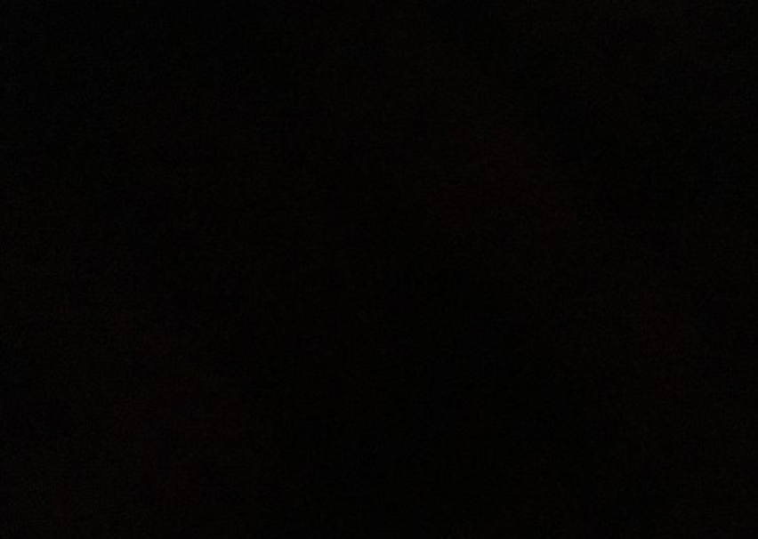

Street
Jam
Festival

Le 15 octobre 2023, Vevey célèbre les tendances actuelles en matière d'art urbain et de musique, et rassemble une communauté de personnes partageant les mêmes intérêts.
Notre événement offre une variété d'activités pour les visiteurs, notamment des démonstrations de skate réalisées par des professionnels, des ateliers de graffiti interactifs, des expositions d'œuvres d'art urbain innovantes et des performances musicales d'artistes locaux et internationaux.
Notre objectif est de créer un espace pour que les artistes de rue et les amateurs de culture urbaine puissent se rencontrer, partager leur savoir-faire et leur passion pour l'art urbain et s'immerger dans une ambiance urbaine unique.
Notre festival propose également une sélection de stands de restauration proposant une cuisine de rue authentique pour ravir les papilles des visiteurs.
Tags
Graffiti
Street Art
-
09h00-11h00
Sessions libres -
10h00-12h00
Atelier de graffiti interactif avec Jojo -
13h30 – 17h00
Démonstration de Manos68 et sessions libres
Nous sommes ravis de présenter notre invité d'honneur pour le Street Jam Festival, la célèbre graffeuse JoJo.
Originaire de Fribourg, JoJo a commencé à expérimenter avec les bombes aérosols à l'âge de 14 ans et a depuis créé une réputation internationale pour son style unique et expressif. Son travail est influencé par la culture hip-hop, la street culture et l'art urbain contemporain, et est souvent caractérisée par des couleurs vives, des formes organiques et des détails saisissants.
JoJo est une figure emblématique de la scène graffiti, et son travail a été présenté dans des expositions du monde entier. En plus de son travail de graffeur, elle est également un mentor pour la jeune génération d'artistes urbains, organisant des ateliers et partageant son expérience avec la communauté.
Nous sommes honorés d'accueillir JoJo en tant qu'invitée d'honneur de notre festival urbain annuel, et nous sommes impatients de voir son talent en action lors de notre atelier de graffiti interactif. Les participants auront l'occasion d'apprendre directement d'elle, de découvrir son processus créatif et de s'inspirer de son travail unique.
Skate
-
09h00-10h00
Inscriptions et accueil des participants -
10h00-10h30
Démo de skateboard par des professionnels -
10h30-11h30
Atelier d'initiation au skateboard pour les débutants -
11h30-12h30
Session de skateboard libre pour les participants -
12h30-13h30
Pause -
13h30-14h00
Concours de skateboard "Meilleure figure" pour les participants -
14h00-15h00
Session de skateboard libre pour les participants -
15h00-15h30
Démo de skateboard par des professionnels -
15h30-16h30
Atelier de skateboard "Street Style" pour les skateurs expérimentés -
16h30-17h00
Remise des prix pour le concours "Meilleure figure" -
17h00
Fin de la journée
Veuillez noter que les horaires sont donnés à titre indicatif et peuvent être sujets à des changements. Les participants seront informés des horaires définitifs lors de leur inscription à l'événement.
-
15h00-17h00
Atelier de musique urbaine pour les amateurs de beatmaking et de rap -
17h00-23h00
Concert de hip-hop avec des artistes locaux et nationaux -
24h00
Fin de la journée
Street Food
Notre festival vous propose une variété de stands de restauration sur place tout au long de la journée. Vous pourrez notamment découvrir.
Oh my b!
Un camion de restauration rapide proposant des burgers artisanaux avec des ingrédients frais et locaux.
Con cilantro wey
Un stand proposant des tacos et des burritos à la viande grillée ou végétarienne, accompagnés de guacamole, de salsa et de sauces épicées.
Frankie's Hot Dogs
Un stand proposant des hot-dogs traditionnels, avec une variété de garnitures et des frites fraîches et croustillantes.
Poke Paradise
Un stand proposant des bols de poke hawaïen, avec du poisson frais, du riz, des légumes, des fruits et des sauces savoureuses.
La Bretagne ambulante
Un stand proposant des crêpes et des gaufres sucrées ou salées, avec une variété de garnitures comme des fruits frais, du Nutella, du fromage, des œufs et des légumes.
Smoothies Stop
Un stand proposant des smoothies et des jus de fruits frais, avec des mélanges de saveurs originales et saines pour une pause rafraîchissante.
Contact
Street Jam Festival
Place du Marché 2
1800 Vevey